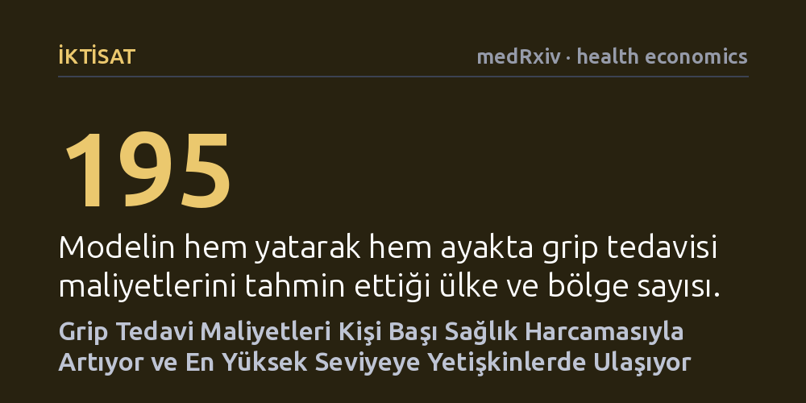

IKTISAT · medRxiv · health economics · 2026-10-12
Mevsimsel grip tedavisinin doğrudan sağlık maliyetlerini belirlemek amacıyla 195 ülke ve bölgeyi kapsayan geniş bir derleme ve Bayesçi modelleme yürütüldü. Tedavi harcamalarının kişi başı sağlık giderleriyle arttığı, yatarak tedavide belirgin biçimde yükseldiği ve en çok yetişkinleri etkilediği saptandı.
Özellikle veri bulunmayan düşük ve orta gelirli ülkelerde aşı ve salgın tedbirlerinin ekonomik değerini hesaplayabilmek için ilk kez küresel ve karşılaştırılabilir bir maliyet tabanı sunuyor.

Mevsimsel grip, her yıl milyonlarca insanı yatağa düşüren ve küresel sağlık sistemleri üzerinde ağır bir finansal yük oluşturan yaygın bir solunum yolu hastalığıdır. Bu yükü hafifletmek amacıyla geliştirilen grip aşıları ya da ilaç dışı koruyucu tedbirlerin ne ölçüde maliyet-etkin olduğunu hesaplamak, doğrudan tedavi harcamalarının bilinmesini gerektirir. Ancak bir müdahalenin bütçeye getireceği tasarrufu öngörebilmek, hastalığın tedavi süreçlerinin gerçek maliyetine dair sağlam verilere dayanmak zorundadır.
Mevcut bilimsel literatürde ise tedavi ortamları, yaş grupları ve ülkeler arasında büyük veri uçurumları bulunmaktadır. Özellikle düşük ve orta gelirli ülkelerde hastaneye yatış ve ayakta tedavi masraflarına dair doğrudan veriler son derece kısıtlıdır. Karar vericiler, kısıtlı bütçeleri aşılama ile hastane tedavisi arasında paylaştırırken güvenilir küresel tahminlere ihtiyaç duymaktadır.
Araştırmacılar bu veri boşluğunu aşmak için 'şemsiye derleme' yöntemine başvurdu. Çocuklar, yetişkinler ve yaşlılarda mevsimsel grip tedavisinin yatarak ve ayaktan doğrudan hastane maliyetlerini bildiren sistematik derleme ve meta-analizler taranarak 7 kapsamlı derleme çalışmaya dahil edildi. Yetişkinlerin ayakta tedavi maliyetlerindeki eksikliği gidermek için ise 17 birincil çalışma ek bir sistematik taramayla analize eklendi.
Farklı dönem ve para birimlerinde raporlanan tüm maliyet verileri, karşılaştırılabilirlik sağlamak amacıyla 2023 ABD doları cinsine uyarlandı. Ardından araştırmacılar, ulusal ekonomik göstergeleri, yaş gruplarını ve tedavi ortamlarını öncül değişken olarak kullanan bir Bayesçi karma etkiler regresyon modeli kurdu. Bu model sayesinde, verisi bulunmayan bölgeler de dahil olmak üzere 195 ülke ve bölge için doğrudan grip tedavisi masrafları tahmin edildi.
Elde edilen verilerin büyük bir kısmının yüksek gelirli ülkelerden geldiği ve çoğunlukla hastaneye yatış maliyetlerine odaklandığı görüldü. Kurulan modeller arasında veriyi en iyi açıklayan yapı, tedavi maliyetlerini kişi başı ulusal sağlık harcaması üzerinden tahmin eden ve ülke düzeyinde rastgele etkileri içeren model oldu. Analiz sonuçlarına göre, bir ülkenin kişi başına sağlık harcaması arttıkça grip tedavisinin maliyeti de belirgin biçimde yükselmektedir.
Çalışmanın bir diğer temel bulgusu, tedavi türü ve yaş grupları arasındaki maliyet farklarıdır. Hastaneye yatarak tedavi görmenin doğrudan maliyeti, ayakta tedaviye kıyasla kayda değer ölçüde yüksek çıkmıştır. Yaş grupları incelendiğinde ise doğrudan tedavi masraflarının en yüksek seviyeye yetişkinlerde ulaştığı, en düşük maliyetin ise çocuklarda gözlemlendiği belirlenmiştir.
Bu çalışma, mevcut küresel kanıtları sentezleyip veri bulunmayan bölgelere modelleme yoluyla tahminler üreterek dünya çapında grip müdahalelerinin ekonomik değerlendirmelerine temel bir zemin hazırlamaktadır. Özellikle sağlık bütçesi kısıtlı ülkeler, grip aşılaması programlarının maliyet tasarrufu potansiyelini değerlendirirken bu tahminlerden yararlanabilir.
Bununla birlikte, çalışmanın henüz hakem denetiminden geçmemiş bir önbaskı olduğu unutulmamalıdır. Düşük ve orta gelirli coğrafyalara ait tahminlerin büyük ölçüde yüksek gelirli ülkelerin verilerinden yapılan istatistiksel dışdeğerbiçimlere dayanması, bu sonuçların sahadan gelecek doğrudan yerel maliyet verileriyle doğrulanmasını zorunlu kılmaktadır.